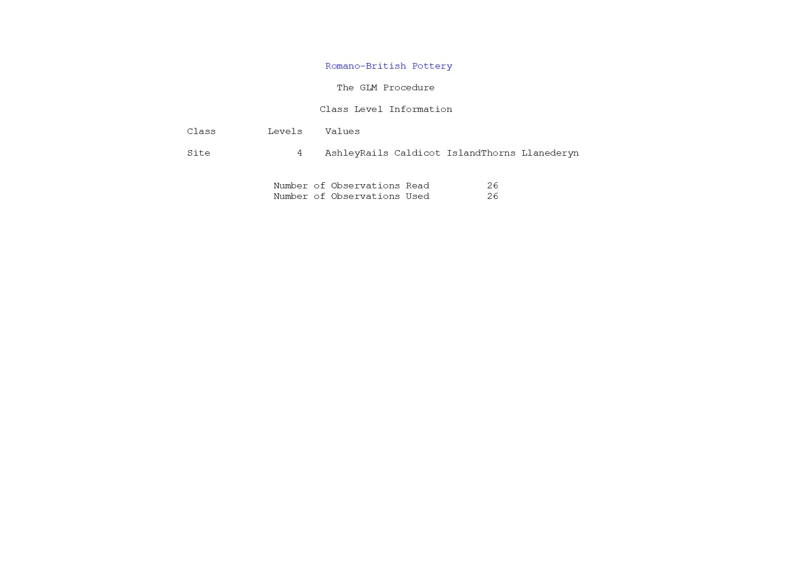
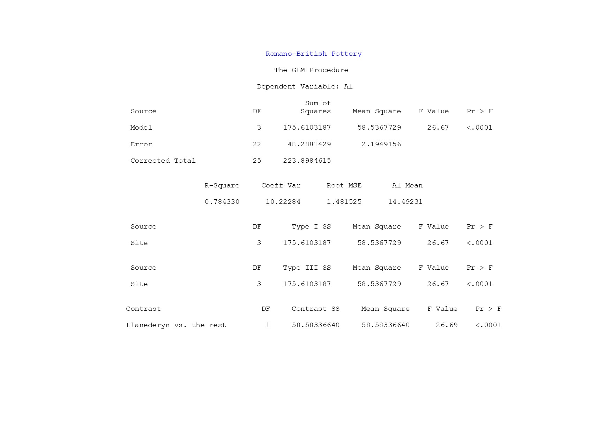
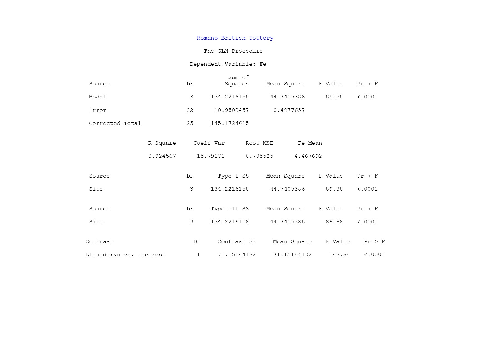
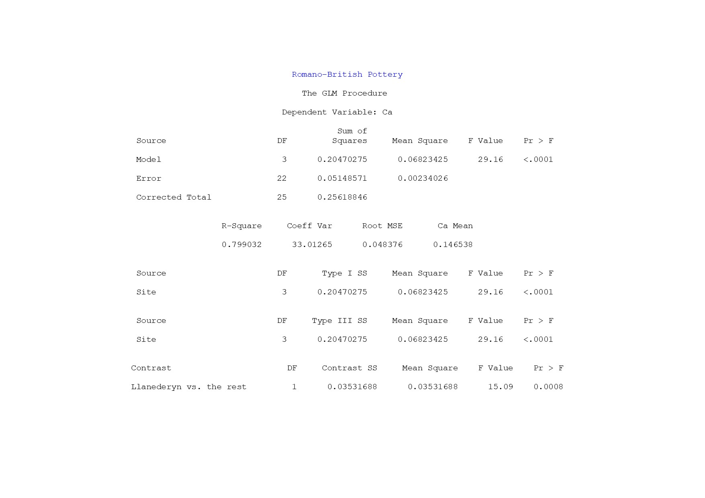
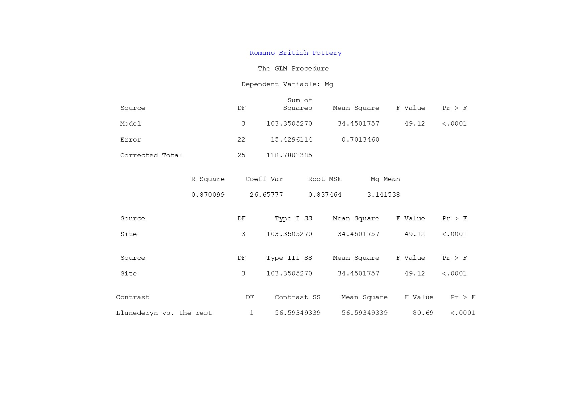
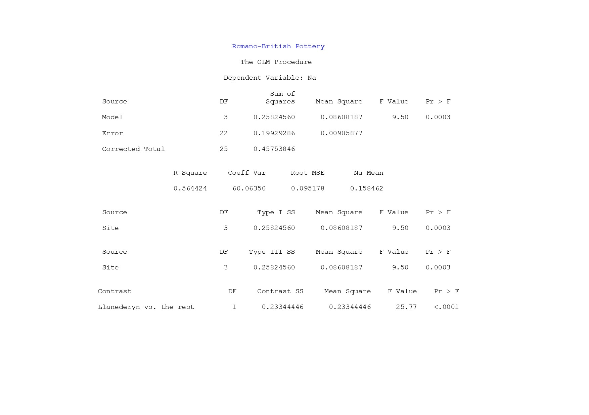
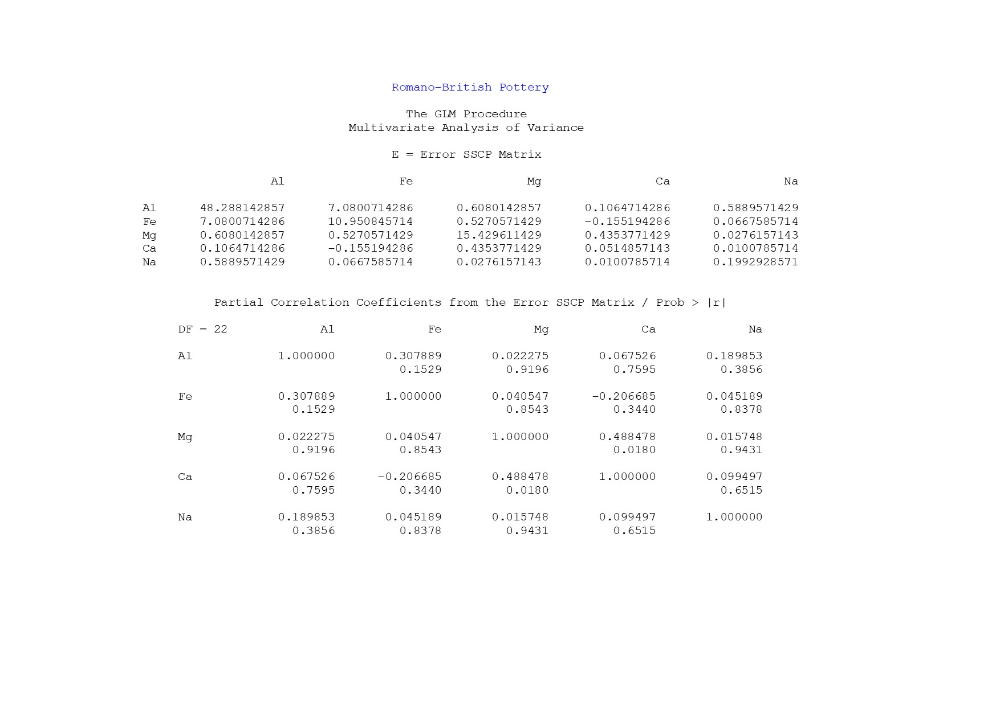
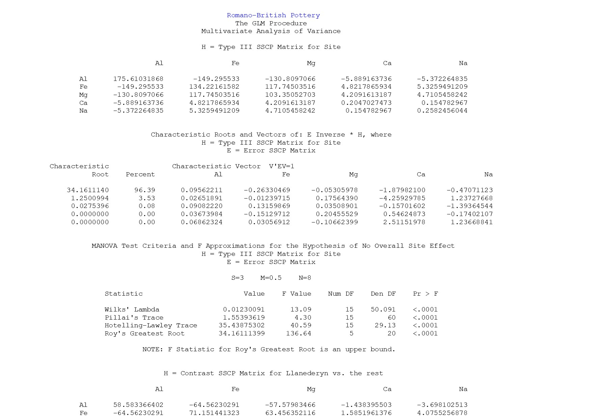
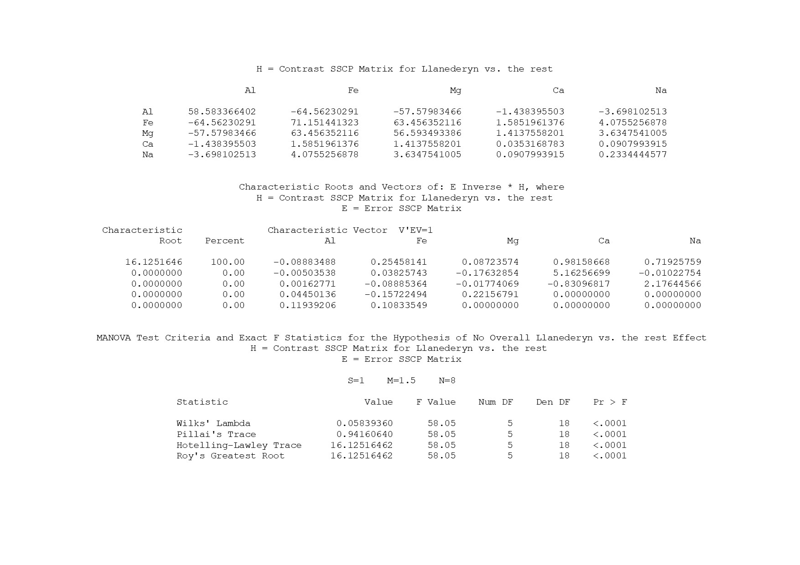

#Example code
title "Romano-British Pottery";
data pottery;
input Site $12. Al Fe Mg Ca Na;
datalines;
Llanederyn 14.4 7.00 4.30 0.15 0.51
Llanederyn 13.8 7.08 3.43 0.12 0.17
Llanederyn 14.6 7.09 3.88 0.13 0.20
Llanederyn 11.5 6.37 5.64 0.16 0.14
Llanederyn 13.8 7.06 5.34 0.20 0.20
Llanederyn 10.9 6.26 3.47 0.17 0.22
Llanederyn 10.1 4.26 4.26 0.20 0.18
Llanederyn 11.6 5.78 5.91 0.18 0.16
Llanederyn 11.1 5.49 4.52 0.29 0.30
Llanederyn 13.4 6.92 7.23 0.28 0.20
Llanederyn 12.4 6.13 5.69 0.22 0.54
Llanederyn 13.1 6.64 5.51 0.31 0.24
Llanederyn 12.7 6.69 4.45 0.20 0.22
Llanederyn 12.5 6.44 3.94 0.22 0.23
Caldicot 11.8 5.44 3.94 0.30 0.04
Caldicot 11.6 5.39 3.77 0.29 0.06
IslandThorns 18.3 1.28 0.67 0.03 0.03
IslandThorns 15.8 2.39 0.63 0.01 0.04
IslandThorns 18.0 1.50 0.67 0.01 0.06
IslandThorns 18.0 1.88 0.68 0.01 0.04
IslandThorns 20.8 1.51 0.72 0.07 0.10
AshleyRails 17.7 1.12 0.56 0.06 0.06
AshleyRails 18.3 1.14 0.67 0.06 0.05
AshleyRails 16.7 0.92 0.53 0.01 0.05
AshleyRails 14.8 2.74 0.67 0.03 0.05
AshleyRails 19.1 1.64 0.60 0.10 0.03
;
run;
proc glm data=pottery;
class Site;
model Al Fe Mg Ca Na = Site;
contrast 'Llanederyn vs. the rest' Site 1 1 1 -3;
manova h=_all_ / printe printh;
run;Multivariate Analysis of Variance in SAS
Example 39.6 Multivariate Analysis of Variance from SAS MANOVA User Guide
This example employs multivariate analysis of variance (MANOVA) to measure differences in the chemical characteristics of ancient pottery found at four kiln sites in Great Britain. The data are from Tubb, Parker, and Nickless (1980), as reported in Hand et al. (1994).
For each of 26 samples of pottery, the percentages of oxides of five metals are measured. The following statements create the data set and invoke the GLM procedure to perform a one-way MANOVA. Additionally, it is of interest to know whether the pottery from one site in Wales (Llanederyn) differs from the samples from other sites; a CONTRAST statement is used to test this hypothesis.
After the summary information (1), PROC GLM produces the univariate analyses for each of the dependent variables (2-6). These analyses show that sites are significantly different for all oxides individually. You can suppress these univariate analyses by specifying the NOUNI option in the MODEL statement.
1 Summary Information about Groups

2 Univariate Analysis of Variance for Aluminum Oxide (AI)

3 Univariate Analysis of Variance for Iron Oxide (Fe)

4 Univariate Analysis of Variance for Calcium Oxide (Ca)

5 Univariate Analysis of Variance for Magnesium Oxide (Mg)

6 Analysis of Variance for Sodium Oxide (Na)

The PRINTE option in the MANOVA statement displays the elements of the error matrix (7), also called the Error Sums of Squares and Crossproducts matrix. The diagonal elements of this matrix are the error sums of squares from the corresponding univariate analyses.
The PRINTE option also displays the partial correlation matrix (7) associated with the E matrix. In this example, none of the oxides are very strongly correlated; the strongest correlation (r=0.488) is between magnesium oxide and calcium oxide.
7 Error SSCP Matrix and Partial Correlations

The PRINTH option produces the SSCP matrix for the hypotheses being tested (Site and the contrast); (8 and 9). Since the Type III SS are the highest-level SS produced by PROC GLM by default, and since the HTYPE= option is not specified, the SSCP matrix for Site gives the Type III H matrix. The diagonal elements of this matrix are the model sums of squares from the corresponding univariate analyses.
Four multivariate tests are computed, all based on the characteristic roots and vectors of \(E^{-1}H\). These roots and vectors are displayed along with the tests. All four tests can be transformed to variates that have distributions under the null hypothesis. Note that the four tests all give the same results for the contrast, since it has only one degree of freedom. In this case, the multivariate analysis matches the univariate results: there is an overall difference between the chemical composition of samples from different sites, and the samples from Llanederyn are different from the average of the other sites.
8 Hypothesis SSCP Matrix and Multivariate Tests for Overall Site Effect

9 Hypothesis SSCP Matrix and Multivariate Tests for Differences between Llanederyn and the Other Sites

References